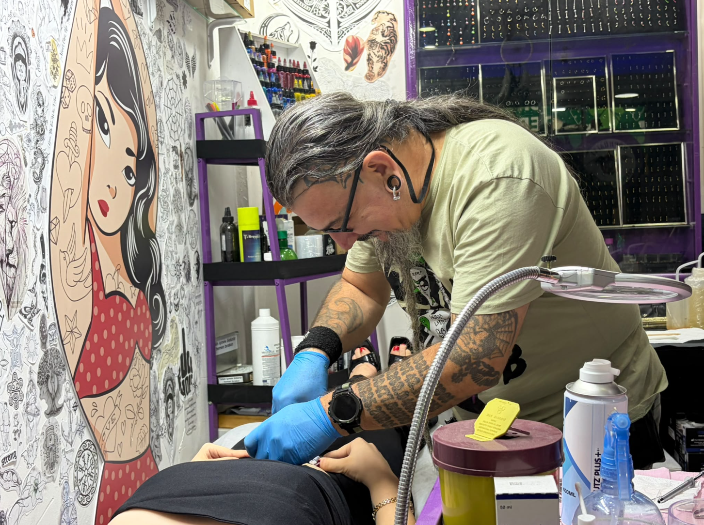

DOKTOR
Bir stüdyonun geçmişi bazen tarih satırlarından değil, yıllardır aynı masada biriken konuşmalardan okunur.
Köprüaltı'nın kurucusu Doktor; eski memuriyet ve askerlik döneminden Beşiktaş'a, oyunlardan çizgi dünyasına kadar farklı hikâyeleri stüdyonun karakterine taşıyan isim. “Doktor” lakabı da hayatında iz bırakan bir doktordan geliyor. Köprüaltı'nın 1993'ten bugüne taşıdığı hafızanın merkezinde hâlâ aktif olarak çalışıyor.
Final portfolyo seçkisi netleştiğinde gerçek stil etiketleri buraya eklenecek.
SEÇİLİ
İŞLER.
Bu alan şimdilik mevcut prototip görselleriyle kuruluyor. Final sürümde yalnızca Doktor'un yaptığı gerçek işler burada yer alacak.
GEÇİCİ GÖRSEL SEÇKİ / YAPI TESTİProfil + iş galerisi.
Bu sayfa sanatçı detay şablonumuz olacak. Cansın, Su ve Birsu'nun bilgileri ve gerçek iş görselleri geldiğinde aynı yapı onların profillerine de uygulanacak.
Bir iş portfolyoya eklendiğinde sanatçı etiketi üzerinden hem genel Portfolyo sayfasında hem de ilgili sanatçının kendi galerisinde gösterilebilecek. Böylece aynı görseli iki kez yönetmek zorunda kalmayacağız.